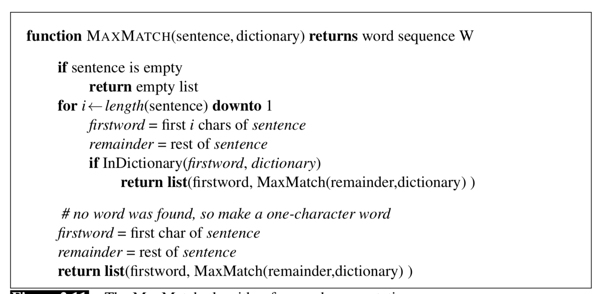
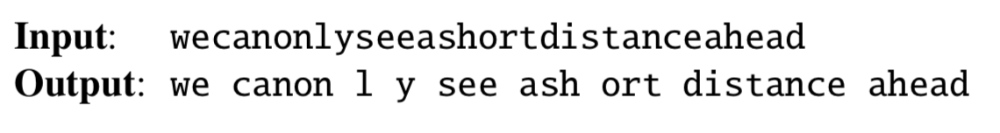
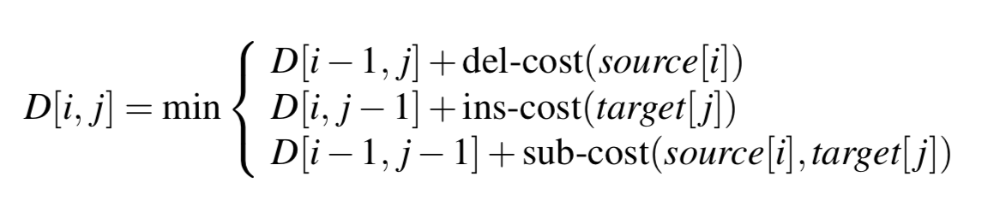
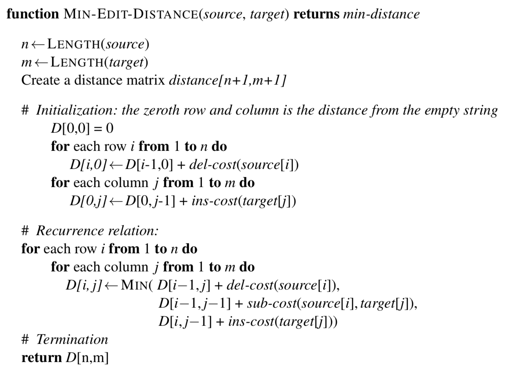

标准化(normalization)
Unix命令
通过Unix命令可以简单的实现对文本的标准化分割，例如：tr -sc ’A-Za-z’ ’\n’ < sh.txt | tr A-Z a-z | sort | uniq -c | sort -n -r
将sh.txt文件中句子分割成单行单词并统计出现次数，按照降序排列。
仅仅Unix的简单功能是不够用的，需要更多的标准化算法来执行语料分割。
记号赋予器(tokenizer)
在字母表示的语言中有很多的缩写单词，比如”we’re”,”where’re”，在识别的时候，记号赋予器将他们拆分为”we are”、”where are” are。根据应用程序的不同，将诸如”New York”、”rock ’n’ roll”这样多单词表示，识别为一个标记。标记化与命名实体检测、名称、日期和组织的检测任务紧密相关。
Penn Treebank tokenization standard
语言数据协会(LDC)发布的语料库收集了许多有用数据集，这个标准区分了‘连字符，如将doesn’t变成does not。举例：
![][1.png “”]
大小写折叠(case folding)
在语音识别和信息检索中，将所有单词小写化是一种有效的处理方式。但是在情感分析等文本处理、机器翻译、信息提取中，应当避免这种处理。因为可能会造成损失，例如US和us的差异。
记号化是语言处理的第一步，所以对速度有很高要求。因此标记化/非标计划的标准方法是，使用基于正则表达式的算法编译成有限状态机。精细设计的算法能用已处理歧义，比如‘作为属格标记如书的封面、“”用作引用、附着词如we’re。
汉语字符分割：最大匹配算法
汉语、日文等语言，没有空格作为词语间的分隔符。例如汉字作为汉语的语素，通常由若干个汉字组成一个词语，平均长度2.4个字。以贪心算法为基础的分割算法( maximum matching,有时称为 MaxMatch)，在汉语分割中效果显著。这类算法需要一个词典用作检索。从字符串的首位开始，尾指针下移，检索字典是否有对大长度匹配的条项，如果有，头指针移到尾指针处，如果没有，分割出单个头指针处的汉字。以上循环处理。算法示意如图：

该算法在英语中并不好用，因为英语单词的构成不如汉字严密，很有可能会产生多种匹配，偏离文本愿意。例如：

将输出分段与完美的手工分段句子进行比较，单词错误率就是最小编辑距离：\(\frac{单词插入、删除和替换的数量}{单词中完美分段语句的长度}\)。最大匹配算法遇到词典中不存在的词，或者词义与字典所存不一致时，会产生问题。最准确的中文分割算法一般采用人工分割训练集上经过监督机器学习训练的统计序列模型。
词形还原和词干提取(Lemmatization and Stemming)
在很多语言处理环境，希望不同形式的词语具有接近的意思，通过词形还原和词干提取实现。最复杂的词形还原方法涉及到对单词进行完整的形态分析。
词语由较小的词素组成，词素分为词干和词缀。词干(stems)是词根的主体，词缀(affixes)是词义的附加。例如cats，词干是cat，-s表示复数。
Porter Stemmer算法
词形还原算法可能很复杂，引入词干分析，简单粗糙的截断词尾词缀。最广泛使用的便是Porter算法。基于一系列字符串重写规则，把每一次的输出作为下一次的输入。例如：
ATIONAL → ATE (e.g., relational → relate)
ING → ε if stem contains vowel (e.g., motoring → motor)
SSES → SS (e.g., grasses → grass)
但存在过度概括的问题。
语句分割(Sentence Segmentation)
语句分割把标点符号作为常用的线索，但是标点符号有时候会是词的一部分。例如句号在句子边界标记和缩写标记(如Mr. or Inc.)之间存在歧义。
最小编辑距离
很多NLP处理与两个字符串的相似度有关，两个字符串之间的最小编辑距离定义为将一个字符串转换成另一个字符串所需的最小操作数(如插入、删除、替换等操作)。替换可以被视为删除+插入。对最小编辑距离算法稍加修改，便可以提供两个字符串之间的最小成本对齐。
最小编辑距离算法，使用动态规划。设有字符串X、Y，长度分别为n、m，D(i,j)定义为X[1…i]与Y[1…j]之间的编辑距离。因此X、Y的最小编辑距离为D(n,m)。算法核心思想如图：
算法伪代码如图：